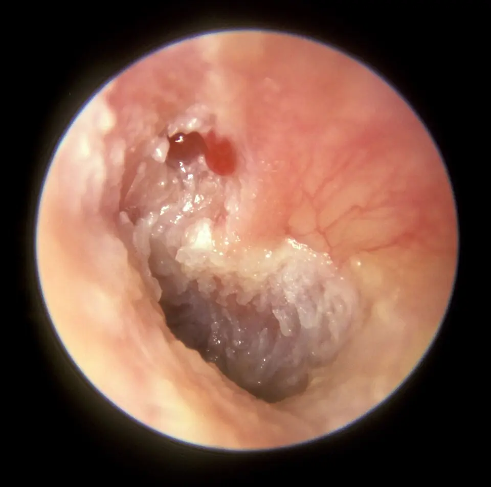

DX.8 — Cholestéatome de l’oreille moyenne 🚩 E3
Une otorrhée minime et fétide avec une surdité qui s’aggrave lentement cache parfois un cholestéatome, qui détruit l’os en silence jusqu’à la complicationS2. Aucun médicament ne le guérit : le diagnostic se fait à l’otoscopie, le scanner prépare l’opération, et la chirurgie suivie d’une longue surveillance reste le seul traitementS3S4.
1. Définition
La Société française d’ORL (oto-rhino-laryngologie) définit en 2010 le cholestéatome de l’oreille moyenne par la présence d’un épithélium malpighien qui se développe dans les cavités de l’oreille moyenne ou de la mastoïdeS3. Le Collège français d’ORL précise que cet épithélium kératinisé possède un triple potentiel de desquamation, de migration et d’érosionS2.
2. Épidémiologie (Suisse, puis Europe)
La Société européenne de radiologie de la tête et du cou estime que le cholestéatome touche environ 6 à 9 personnes sur 100 000 dans les pays développésS4. Les registres danois en décrivent le pic vers 9 ans chez l’enfant, et les séries suisses montrent que l’adulte opéré a en moyenne 35 à 40 ansS9S6. Le partage entre formes oriente l’examen vers la pars flaccidaS4.
Registres danois : incidence et terrain
| Chiffre | Population | Année | Source |
|---|---|---|---|
| Incidence passée de 8 à 15 pour 100 000 personnes-années, puis revenue à 10 | Enfants danois de 0 à 15 ans, première chirurgie | 1977–2002, puis 2010 | S9 |
| Proportion cumulée de 0,16 % à 16 ans | Même registre, taux de 2010 | 2010 | S9 |
| Risque multiplié par 20 en cas de fente palatine, et par 14 en cas de fente labio-palatine | 8593 porteurs de fente, cohortes de naissance 1936–2009 | 2015 | S11 |
| Proportion cumulée à 12 ans de 0,04 % sans aérateur et de 0,55 % après quatre aérateurs ou plus | 217 206 enfants porteurs d’aérateurs | 1997–2011 | S10 |
L’incidence danoise augmentait de 1,8 % par an jusqu’en 2002, puis elle a baissé de 5,4 % par an jusqu’en 2010S9. Cette baisse a suivi une hausse marquée de la pose d’aérateurs, sans que les auteurs puissent en conclure à un lien causalS9.
Ces registres ne comptent que les cholestéatomes opérés, et non les formes jamais opéréesS9. Le lien avec les aérateurs reflète surtout la durée de l’otite sous-jacente, et les auteurs signalent un possible biais de sélectionS10.
Séries chirurgicales suisses
| Chiffre | Population | Année | Source |
|---|---|---|---|
| Âge moyen de 39,9 ans chez les opérés au microscope et de 37,9 ans chez les opérés par endoscopie | 188 oreilles adultes, Hôpital universitaire de Zurich | 2016–2021 | S6 |
| Âge moyen de 35 ans, avec des extrêmes de 2 à 96 ans | 259 opérations, HUG (Hôpitaux universitaires de Genève) de Genève | 1974–1998 | S8 |
| Petits cholestéatomes chez 182 patients, soit 70 % | 264 opérations, Hôpital cantonal de Lucerne | 2024 | S7 |
Ces séries décrivent des patients opérés dans des centres tertiaires ; elles ne mesurent pas la fréquence du cholestéatome dans la population suisseS6S8.
3. Physiopathologie
Chaque signe du cholestéatome s’explique par la structure qu’il ronge, d’où la base anatomique à connaître sur les voisins de l’attiqueS3. La lésion naît le plus souvent d’une poche de rétraction, puis la cascade érosive la conduit vers les osselets, le labyrinthe, le nerf facial et les méningesS2S4. Le tableau de corrélation relie chaque érosion à l’examen qui la montre et à la décision qu’elle imposeS3.
Base à connaître : l’attique et ses voisins dangereux
L’attique, ou épitympan, est l’étage supérieur de la caisse ; il abrite la tête du marteau et le corps de l’enclume, juste au-dessus de la pars flaccidaS2S3. Sa paroi externe, le mur de la logette, est le premier os que le cholestéatome attical érodeS3.
En dedans, le canal semi-circulaire latéral fait saillie ; son érosion ouvre le labyrinthe et explique le vertige provoqué par la pressionS3S2. Le canal du nerf facial longe cette paroi, ce qui explique la paralysie faciale périphériqueS3.
En haut, le tegmen sépare l’oreille de la fosse cérébrale moyenne, et en arrière, la coque du sinus sigmoïde la sépare de la fosse postérieureS3. Leur lyse explique la méningite, l’abcès temporal ou cérébelleux et la thrombose du sinusS2S3.
Structures de l’oreille, schéma anatomique en couleur. Ce schéma publié montre une coupe frontale de l’oreille droite, de l’auricule à la cochlée, avec la caisse et la trompe.

Lisez d’abord seul ce schéma : cherchez vous-même l’étage supérieur de la caisse et ce qui l’entoure.
Sur la copie annotée, chaque chiffre correspond à la phrase de même numéro de la lecture guidée.
Lecture guidée. Les repères vont de l’attique vers les zones que le cholestéatome menace.
- Le marteau et l’enclume occupent l’attique ; c’est là que naît le cholestéatome de la pars flaccida.
- Les canaux semi-circulaires sont tout proches ; le canal latéral est le plus souvent fistulisé.
- Le tympan ferme la caisse ; sa partie haute, la pars flaccida, borde directement l’attique.
- La caisse se prolonge en arrière vers la mastoïde, où la lésion peut s’étendre loin du tympan.
- La trompe auditive ventile la caisse ; sa dysfonction crée la dépression qui creuse la poche.
Pièges. Le schéma ne montre pas deux voisins essentiels.
- Le nerf facial n’y figure pas, alors qu’il chemine contre la paroi interne de la caisse.
- Le tegmen et le sinus sigmoïde n’y figurent pas, alors que leur lyse mène aux complications intracrâniennes.
Ce que l’image décide. Un vertige, une paralysie faciale ou une céphalée fébrile chez un patient porteur d’un cholestéatome traduisent une érosion d’un voisin et imposent l’urgence.

Genèse : quatre mécanismes acquis et deux théories congénitales
- La rétraction et l’invagination de la membrane tympanique, dans les otites atélectasiques, forment la cause la plus fréquenteS2.
- L’épiderme peut migrer directement à partir des berges d’une perforation marginaleS2.
- Les cellules basales de l’épithélium du conduit et du tympan peuvent proliférer en profondeurS2.
- Une fracture du rocher ou une chirurgie peuvent implanter de l’épiderme dans la caisseS2.
La forme liée à une poche de rétraction est dite acquise primaire, et celle liée à une perforation est dite acquise secondaireS4. La forme congénitale siège surtout dans le cadran antéro-supérieur, où persisterait un reliquat épidermoïde embryonnaireS2.
Une autre forme congénitale apparaît près du promontoire, à la zone de fusion des deux premiers arcs branchiauxS2. Dans cette localisation, la branche descendante de l’enclume et l’étrier sont les premiers osselets lysés, ce qui explique une surdité de transmission derrière un tympan ferméS2.
Cascade érosive, de la kératine à la complication
- La kératine desquamée s’accumule au fond d’une poche qui ne s’autonettoie plusS2.
- La matrice et la périmatrice entretiennent une réaction inflammatoire plus ou moins agressive, qui érode l’os voisinS4.
- La kératine infectée explique l’otorrhée purulente, minime et fétideS2.
- La lyse des osselets, surtout de la longue apophyse de l’enclume, aggrave la surdité de transmissionS3.
- L’érosion du canal semi-circulaire latéral provoque une fistule, puis parfois une labyrinthite purulenteS2.
- La lyse du tegmen ou du sinus sigmoïde favorise les complications méningo-encéphaliques et la thrombose veineuseS3.
Corrélation : érosion, exploration, décision
| Perturbation | Exploration qui la montre | Thérapeutique et mécanisme |
|---|---|---|
| Lyse du mur de la logette | Scanner des rochers sans injectionS3 | Exérèse chirurgicale, voie adaptée à l’extensionS4 |
| Lyse ossiculaire | Audiométrie, scannerS3 | Ossiculoplastie par autogreffe ou prothèseS4 |
| Fistule du canal semi-circulaire latéral | Signe de la fistule, scanner, IRM (imagerie par résonance magnétique) T2 (temps de relaxation transversale) si extension labyrinthiqueS2S3 | Indication opératoire, car les troubles restent alors réversiblesS2 |
| Lyse du canal facial | Paralysie faciale, scannerS2S3 | Indication opératoire formelleS2 |
| Lyse du tegmen ou du sinus sigmoïde | IRM avec gadolinium, angio-IRM veineuseS3 | Hospitalisation, antibiotique intraveineux, chirurgieS2 |
4. Démarche diagnostique
Le médecin cherche d’abord une complication en cours, car le cholestéatome peut se révéler par une méningite, un abcès, une paralysie faciale ou une labyrinthiteS2. Il affirme ensuite la lésion à l’otoscopie, puis il l’oppose à l’otite chronique simple et aux autres causes d’otorrhée grâce aux éléments qui tranchentS2S13.
L’erreur classique du débutant consiste à traiter par gouttes une croûte ou un polype attical, alors que ces lésions masquent souvent un authentique cholestéatomeS2. Le cas chiffré montre comment l’éviter.
Diagnostics discriminants : ce qui tranche
| Diagnostic | Élément qui tranche | Piège | Conduite si positif |
|---|---|---|---|
| Complication endocrânienne | Fièvre, céphalées, syndrome méningé, signes focauxS2 | Une méningite paraît primitive si l’on n’examine pas les oreillesS2 | Hospitalisation, imagerie, antibiotique intraveineuxS2 |
| Otite chronique simple (DX.3) | Perforation non marginale, caisse muqueuseS2 | Une croûte atticale passe inaperçueS2 | Traitement local et tympanoplastie |
| Poche de rétraction contrôlable | Fond de poche visible et autonettoyantS13 | La poche devient non contrôlable sans bruitS13 | Surveillance otologique et audiométriqueS13 |
| Otite externe ou otomycose (DX.1, DX.4) | Débris du conduit, tympan intact après nettoyageS2 | Des débris fongiques blancs imitent la kératine | Conduite du DX.1 ou du DX.4 |
| Fuite de liquide cérébrospinal (DX.10) | Otorrhée claire, parfois mêlée de sangS2 | Elle peut compliquer un cholestéatomeS2 | Conduite du DX.10 |
Cas chiffré : la croûte qui cachait la lésion
Un garçon de 9 ans, l’âge du pic danois, consulte pour une oreille droite qui coule peu mais sent mauvais depuis plusieurs moisS9S2. L’otoscopie montre une pars tensa normale et une petite croûte au niveau de la pars flaccidaS2.
Le débutant prescrirait des gouttes pour une « otite externe », alors que la croûte atticale doit être retirée sous microscopeS2. L’ORL découvre une perforation de la pars flaccida remplie de squames, et l’audiogramme montre une transmission de 45 dB, supérieure au seuil de 40 dBS14.
Le scanner des rochers est donc demandé, puis l’enfant est opéré ; comme son risque de récidive à 5 ans atteint 37 % dans la série danoise, le suivi durera des annéesS12S3.
5. Anamnèse ciblée et drapeaux rouges
Les signes d’appel sont insidieux : une hypoacousie discrète et progressive et une otorrhée purulente, minime et fétideS2. Les HUG ajoutent l’intolérance à l’eau et, parfois, des vertiges, qui comptent parmi les drapeaux rougesS1. Le terrain précise le risque et révèle une chirurgie antérieureS11S4.
Hypoacousie : typique quand elle progresse
La surdité du cholestéatome s’installe lentement et reste longtemps discrète, ce qui retarde la consultationS2. Elle est typique lorsqu’elle s’aggrave d’un contrôle à l’autre, car la lyse ossiculaire progresse avec la lésionS3.
Elle devient atypique et alarmante lorsqu’elle se complète d’une composante de perception, car le labyrinthe est alors atteintS2.
Otorrhée : minime, purulente et fétide
L’écoulement du cholestéatome est peu abondant, purulent et malodorant, souvent mêlé de squames épidermiquesS2. L’équipe de Zurich décrit aussi un écoulement fétide chez ces patients, avec parfois douleur, acouphènes ou vertigeS6.
Un écoulement abondant, muqueux et inodore est moins typique de ce DX et oriente plutôt vers l’otite chronique simpleS2.
Vertige : toujours suspect
Le vertige doit faire soupçonner systématiquement une fistule labyrinthique chez un patient porteur d’un cholestéatomeS2. Un vertige bref, provoqué par la pression ou le mouchage, oriente vers la fistule, alors qu’un grand vertige avec surdité profonde oriente vers la labyrinthite purulenteS2.
Drapeaux rouges et action immédiate
| Drapeau rouge | Signification | Action immédiate |
|---|---|---|
| Céphalées, fièvre, raideur de nuque | Méningite otogène, à pneumocoque ou à streptocoqueS2 | Hospitalisation immédiateS2 |
| Signes focaux, troubles de conscience | Abcès extradural, sous-dural ou cérébralS2 | Imagerie cérébrale en urgenceS2 |
| Asymétrie faciale | Lyse du canal facialS2 | Indication opératoire formelleS2 |
| Grand vertige, surdité profonde | Labyrinthite purulenteS2 | Chirurgie formelle et urgenteS2 |
| Otorrhée devenue claire | Fuite de liquide cérébrospinalS2 | Conduite du DX.10 |
Terrain et antécédents
Une fente palatine augmente d’un facteur 20 le risque de cholestéatome opéré, alors qu’une fente labiale isolée ne l’augmente pasS11. Une otite prolongée qui a exigé plusieurs aérateurs augmente aussi ce risque chez l’enfantS10.
Une chirurgie antérieure de l’oreille compte doublement : elle expose à la récidive et au cholestéatome résiduel, et elle modifie l’anatomie que le chirurgien retrouveraS4. Une fracture du rocher peut enfin implanter de l’épiderme dans la caisseS2.
6. Examen physique ciblé, région par région
Le médecin contrôle d’abord la région rétroauriculaire. Il retire ensuite tous les débris pour examiner la pars flaccida, puis la pars tensa et la caisse, en classant chaque poche de rétractionS2. Il complète par l’acoumétrie, la motricité faciale et le signe de la fistule, dont les gestes sont décrits au DX.3, puis par un examen neurologiqueS2.
Région rétroauriculaire
Une cicatrice rétroauriculaire signale une mastoïdectomie antérieure ; une grande cavité ouverte dans le conduit en est le pendant otoscopiqueS4. Une cavité bien opérée devient propre, sèche et autonettoyante ; à Genève, 5 % des cavités restaient humides, avec otorrhée persistante et parfois otomycoseS8.
Pars flaccida et attique : le siège habituel
L’otoscopie peut montrer une perforation ou une poche marginale atticale qui laisse échapper du pus mêlé de squamesS2. Elle peut aussi ne montrer qu’une croûtelle ou un polype attical, qui masque un authentique cholestéatomeS2.
Cholestéatome attical gauche, otoscopie. Cette photographie otoscopique en couleur montre la partie haute d’un tympan gauche, avec une masse rouge à la pars flaccida.

Lisez d’abord seul cette otoscopie : cherchez vous-même la lésion qui se trouve en haut du tympan.
Sur la copie annotée, le cercle unique correspond à la phrase de la lecture guidée.
Lecture guidée. Le repère suffit à poser l’indication.
- Une petite masse rouge cerise de tissu de granulation naît de la pars flaccida ; une perforation de la pars flaccida se cachait derrière elle et menait au cholestéatome attical.
Pièges. Deux erreurs guettent la lecture.
- Le polype rouge attire le regard vers une simple inflammation, alors qu’il signale la lésion sous-jacente.
- La pars tensa peut rester normale, ce qui rassure à tort l’examinateur pressé.
Ce que l’image décide. Un polype ou une croûte de la pars flaccida impose l’otomicroscopie spécialisée et le scanner, sans arrachement à l’aveugle.

Pars tensa et caisse
Une poche de rétraction de la pars tensa non contrôlable ou non autonettoyante, ou une perforation marginale, peut laisser voir le cholestéatome dans la caisseS2. Une masse blanchâtre derrière un tympan intact oriente vers la forme congénitaleS2.
Cholestéatome et grande perforation gauche, otoscopie. Cette photographie otoscopique en couleur montre une oreille gauche dont la plus grande partie du tympan manque.

Lisez d’abord seul cette otoscopie : cherchez vous-même la matière blanche, puis la paroi interne qui apparaît derrière.
Sur la copie annotée, les deux chiffres renvoient aux deux phrases de la lecture guidée.
Lecture guidée. Les deux repères opposent la lésion et l’anatomie normale de la caisse.
- La grosse masse blanche de kératine du quadrant supérieur gauche est le cholestéatome lui-même.
- La niche de la fenêtre ronde apparaît dans le quadrant inférieur droit, sur la paroi interne de la caisse, parce que le tympan manque.
Pièges. Deux confusions sont fréquentes.
- Des débris de conduit ou des filaments fongiques peuvent imiter la kératine si le conduit n’est pas nettoyé.
- Une grande perforation ne prouve pas une otite simple, car elle peut accompagner un cholestéatome.
Ce que l’image décide. De la kératine visible dans la caisse affirme le cholestéatome et impose l’orientation chirurgicale.

Classer une poche de rétraction : rassurante ou dangereuse
Cyril Page retient trois signes d’alerte devant une poche de rétractionS13. Le premier est l’atteinte de l’annulus tympanicus, qui rend la poche marginaleS13.
Le deuxième signe associe des épisodes d’otorrhée mucopurulente ou une accumulation d’épiderme dans la pocheS13. Le troisième est un fond de poche qui n’est plus visuellement contrôlable, car l’examinateur ne voit plus où finit l’épidermeS13.
Une poche contrôlable, sèche et autonettoyante se surveille, alors qu’une poche desquamante ou otorrhéique est considérée comme un état précholestéatomateuxS2S13.
Examen neurologique ciblé
Le médecin recherche un syndrome méningé, des troubles de la conscience et des signes de localisation, car l’abcès cérébral reste difficile à diagnostiquerS2. Il cherche aussi un nystagmus et un syndrome vestibulaire déficitaire, qui accompagnent la labyrinthite purulenteS2.
7. Approche syndromique
Quatre syndromes se succèdent avec l’extension de la lésion, de l’oreille vers l’endocrâneS2. Le tableau syndromique les décrit, et la définition de leurs signes précise le geste et le mécanismeS2.
Tableau syndromique
| Syndrome | Signes fonctionnels | Signes physiques |
|---|---|---|
| 7.1 Otite chronique dangereuse | Otorrhée fétide, hypoacousie progressiveS2 | Squames, croûte ou polype attical, poche marginaleS2 |
| 7.2 Labyrinthique | Vertige, acouphènes, surdité de perceptionS2 | Signe de la fistule, nystagmus, syndrome vestibulaireS2 |
| 7.3 Facial | Asymétrie du visage, troubles du goûtS2 | Paralysie des deux territoires, signe de Charles BellS2 |
| 7.4 Endocrânien | Céphalées, fièvreS2 | Syndrome méningé, signes focaux, troubles de conscienceS2 |
Définition, geste et mécanisme des signes clés
Les squames sont des débris de kératine que l’on voit au fond de la poche ; elles prouvent que la poche ne s’autonettoie plusS2. Le signe de la fistule associe un vertige et un nystagmus à une variation de pression dans le conduit, car l’air agit directement sur un canal ouvertS2.
La paralysie faciale d’origine otitique touche le front comme la bouche, parce que la lésion atteint le nerf dans son trajet intrapétreuxS2. Le syndrome méningé traduit l’infection des méninges par voie osseuse, labyrinthique ou fracturaireS2.
8. Diagnostic positif et critères
Le diagnostic positif repose dans la majorité des cas sur l’examen otoscopique, et non sur l’imagerieS3. Il est acquis lorsque l’on voit des squames ou de la kératine dans une poche ou une perforation. Il est seulement probable devant une croûte ou un polype attical, qui exige la confirmation spécialiséeS2. Les classifications européennes décrivent ensuite le type et l’extension, et le système ChOLE les chiffreS5S6.
Classifications européennes
L’Académie européenne d’otologie et de neuro-otologie et la Société japonaise d’otologie ont publié en 2017 un consensus sur les définitions, la classification et la stadification du cholestéatomeS5. Les définitions ont recueilli 89 % d’approbation, la classification 98 % et la stadification 75 %S5.
Le texte a été présenté à Édimbourg en juin 2016, lors de la dixième conférence internationale sur le cholestéatomeS5. Certains otologistes jugeaient la stadification trop pauvre en facteurs pronostiques, ce qui a conduit à créer un groupe de travail sur les résultats chirurgicauxS5.
| Type | Origine | Ce qui suffit à le reconnaître |
|---|---|---|
| Congénital | Reliquat épidermoïde derrière un tympan intactS4 | Masse blanche rétrotympanique sans perforationS2 |
| Acquis primaire | Poche de rétractionS4 | Poche non autonettoyante avec squamesS2 |
| Acquis secondaire | Perforation, surtout marginaleS4 | Épiderme migrant par les berges de la perforationS2 |
Système ChOLE : quatre lettres, trois stades
| Lettre | Ce qu’elle mesure | Échelle |
|---|---|---|
| Ch | Extension du cholestéatomeS6 | De Ch1, extension très limitée à la caisse, à Ch4, apex pétreuxS6 |
| O | État de la chaîne ossiculaire après exérèseS6 | De O0 (chaîne intacte) à O4 (platine seule ou fixée)S6 |
| L | ComplicationsS6 | L0 (aucune), L2 (extracrânienne), L4 (intracrânienne)S6 |
| E | Fonction tubaire, jugée sur la pneumatisation mastoïdienneS6 | De E0, bonne, à E2, mauvaiseS6 |
Une règle numérique réunit ces quatre éléments en stades I à III ; l’équipe de Zurich obtient Ch, O et L pendant l’opération, et E sur le scanner préopératoireS6. À Zurich, 89,3 % des patients opérés par endoscopie étaient au stade I, contre 22,5 % des patients opérés au microscopeS6. La chaîne était intacte chez 39 % des premiers et chez 8,7 % des seconds, ce qui montre des lésions plus petites dans le groupe endoscopiqueS6.
Le stade sert à comparer les résultats et à choisir la voie, mais il ne pose pas le diagnosticS6S7.
9. Examens complémentaires
L’otomicroscopie spécialisée reste l’examen de référence, et l’audiométrie documente l’audition avant toute chirurgieS3S6. Le scanner des rochers sans injection est systématique avant l’opération, et l’IRM de diffusion répond aux questions qu’il laisse ouvertesS3S4. La prescription exacte, les pièges de l’imagerie postopératoire, les examens des complications et le tableau d’interprétation complètent cette partieS3.
9.a Otomicroscopie spécialisée : le diagnostic
Le diagnostic est habituellement porté par l’ORL lors de l’examen otoscopique, sous microscope et après aspiration des croûtesS3S2. La lésion est faite de kératine desquamée et de débris malpighiens, entourés d’une matrice fibreuse que le chirurgien doit retirer en totalitéS4.
9.b Audiométrie tonale et vocale
L’audiogramme préopératoire fixe la référence de l’oreille opérée et de l’oreille saine ; l’équipe de Zurich le répète à 3 mois et à 12 mois après l’opérationS6. Une baisse de la conduction osseuse signe une atteinte labyrinthique, que le Collège range parmi les complicationsS2.
Le scanner est indiqué dès qu’une surdité de transmission dépasse 40 dB, car cette perte suggère une lyse ossiculaireS14.
9.c Scanner des rochers : systématique avant l’opération
La recommandation française de 2010 retient, par accord professionnel fort, un scanner haute résolution sans injection dans le bilan préopératoire systématiqueS3. La demande rappelle le contexte et précise les attentes du chirurgien : extensions, complications et anatomieS3.
Les deux signes cardinaux sont une masse tissulaire nodulaire et des zones d’ostéolyse voisinesS3. Une opacité non déclive avec un profil typique d’érosion se voit dans 50 à 97 % des cas, et une érosion ossiculaire dans 82 %, l’enclume étant la plus touchéeS4.
Dans l’attique externe, la masse peut refouler en dedans le bloc formé par le marteau et l’enclumeS3. Dans la mastoïde, elle fait disparaître la trabéculation des cellules mastoïdiennesS3.
Le scanner décrit aussi les variantes à risque opératoire : sinus sigmoïde procident, tegmen procident ou canal facial procidentS3. Il peut être faussement négatif si la kératine s’est évacuée ou a été aspiréeS4.
Chez l’enfant, le scanner à faisceau conique offre une meilleure résolution avec moins de rayons, au prix d’artéfacts de mouvementS4.
9.d IRM de diffusion non écho-planaire
Le cholestéatome apparaît en hypersignal de diffusion, par restriction de la diffusion et effet T2 ; il ne se rehausse pas après gadolinium, contrairement aux granulationsS4. La séquence non écho-planaire surpasse l’écho-planaire à tir unique, qui souffre d’artéfacts dans l’oreille moyenneS4.
Avant l’opération, l’IRM est utile surtout en cas de doute persistant, pour juger une poche de rétraction non contrôlable ou pour dépister une extension intracrânienneS4. Une extension au-delà du bord postérieur du canal semi-circulaire latéral peut contre-indiquer une voie endoscopiqueS4.
Les séquences 3D très pondérées en T2 montrent les liquides de l’oreille interne ; elles aident à détecter une fistule labyrinthique, une fuite de liquide cérébrospinal ou une céphalocèleS4. La fusion de la diffusion avec ces séquences anatomiques augmente la spécificité et la localisation de la lésionS4.
Après l’opération, la diffusion détecte le cholestéatome résiduel avec une sensibilité d’au moins 89,8 %, une spécificité d’au moins 91,7 % et une valeur prédictive négative d’au moins 80,5 %S4. Une lésion de moins de 2 à 3 mm peut échapper à l’examenS4.
Prescription exacte de l’imagerie
Le bon de scanner rappelle brièvement le contexte clinique et précise ce que le chirurgien attend : extensions, complications et anatomieS3. Il demande un scanner haute résolution en coupes fines, avec acquisition hélicoïdale et sans produit de contrasteS3.
Les scanners récents utilisent une collimation de 0,5 à 0,75 mm, avec des coupes chevauchantes reconstruites en filtre osseuxS4. Le scanner à faisceau conique atteint une résolution isotrope de 0,15 à 0,5 mm avec une dose plus faibleS4.
Le bon d’IRM précise une séquence de diffusion non écho-planaire, de préférence en coupes coronales, qui localise mieux la lésion dans la caisse et la mastoïdeS4. Il ajoute des séquences anatomiques, et le gadolinium seulement si une infection ou une complication est suspectéeS4.
Le coefficient de diffusion apparent du cholestéatome est bas, mais les seuils publiés varient de 759 à 1370, en unités de 10⁻⁶ mm²/s, selon la techniqueS4. Aucun seuil unique ne tranche donc, et une lésion douteuse se recontrôle à distanceS4.
Pièges de l’imagerie postopératoire
Après l’opération, le scanner est très limité, car le liquide, les granulations et la fibrose sont fréquents et indiscernables du cholestéatomeS4. Il distingue aussi mal une érosion due à la lésion d’un défect laissé par le chirurgienS4.
En diffusion, plusieurs structures postopératoires peuvent donner un hypersignal et simuler un résiduel, ce qui crée des faux positifsS4. Un abcès abaisse lui aussi le coefficient de diffusion, d’où la confrontation constante à la cliniqueS4.
Examens des complications
Une suspicion d’infection méningo-encéphalique, d’extension intracrânienne ou de thrombose du sinus sigmoïde impose l’IRM en complément du scannerS3. L’angio-IRM veineuse recherche la thrombose, et la séquence de diffusion aide à distinguer un abcès d’une tumeur nécroséeS3.
En urgence, le scanner injecté est utile lorsqu’un abcès ou une thrombose veineuse est suspecté ; l’IRM injectée lui est préférée lorsqu’elle est accessibleS4.
Interprétation : résultat, signification, conduite
| Résultat | Signification | Conduite |
|---|---|---|
| Masse nodulaire et lyse du mur de la logette | Cholestéatome atticalS3 | Chirurgie programméeS3 |
| Lyse du canal semi-circulaire latéral | Fistule labyrinthiqueS3 | Indication opératoireS2 |
| Lyse du tegmen | Risque méningo-encéphaliqueS3 | IRM, chirurgie rapideS3 |
| Hypersignal de diffusion, faible coefficient apparent | Cholestéatome probableS4 | Confrontation clinique ; contrôle si douteS4 |
| Opacité de la caisse sur un scanner postopératoire | Signe non spécifiqueS4 | IRM de diffusionS4 |
| Caisse et mastoïde aérées, sans érosion | Cholestéatome très improbableS4 | Reprendre l’otoscopie et le suiviS4 |
10. Arbre décisionnel
L’arbre commence par l’urgence vitale, puis il descend vers le diagnostic et la préparation de l’opérationS2S3.
- Si une fièvre, des céphalées, un syndrome méningé ou des signes focaux accompagnent l’otorrhée, alors le patient est hospitalisé et reçoit une imagerie cérébraleS2.
- Si une paralysie faciale ou un grand vertige apparaît, alors l’indication opératoire est formelle et l’ORL est appelé le jour mêmeS2.
- Si l’otoscopie montre des squames, une croûte ou un polype attical, alors l’ORL réalise une otomicroscopieS2.
- Si la poche de rétraction reste contrôlable et autonettoyante, alors une surveillance otologique et audiométrique suffitS13.
- Si le patient a été opéré, alors la surveillance clinique et l’IRM de diffusion se poursuivent pendant des annéesS2S4.
11. Prise en charge selon les recommandations suisses
11.A But
L’équipe genevoise fixe le but principal : éradiquer les lésions et obtenir l’assèchement définitif de l’oreille, la préservation de l’audition restant un objectif secondaireS8. Le Collège ajoute la reconstruction du tympan pour éviter la récidive et, si possible, celle de la chaîne ossiculaireS2.
11.B Moyens
Une complication impose la conduite d’urgence chronologique et une hospitalisationS2. Hors urgence, le traitement est exclusivement chirurgical : le choix de la voie d’abord dépend de l’extension, et la reconstruction suit l’exérèseS3S1. Les médicaments ne servent qu’à assécher l’oreille ou à traiter une complication, et les situations spéciales concernent surtout l’enfantS2S12.
Urgence — conduite chronologique
- Dans les premières minutes, le médecin évalue la conscience, la nuque, la motricité faciale et l’équilibre, puis il examine les deux oreillesS2.
- Dans l’heure, un syndrome méningé ou des signes focaux font transférer le patient à l’hôpital, car la méningite otogène et l’abcès mettent la vie en jeuS2.
- À l’hôpital, la méningite otogène reçoit un antibiotique intraveineux, comme la ceftriaxone, dont l’AIPS (Arzneimittel-Informations-Publikations-System, base suisse des informations professionnelles) couvre la méningiteS2S15.
- Le jour même, une paralysie faciale ou une labyrinthite purulente conduisent à l’indication opératoire formelle et urgenteS2.
- Le médecin prévoit qu’une méningite apparemment primitive peut venir de l’oreille, et il demande l’examen otologique de toute méningite purulenteS2.
Voies d’abord : du conduit à la mastoïde
Aux HUG, un cholestéatome sans complication est opéré par le conduit, souvent par endoscopie, sous anesthésie générale ou plus rarement localeS1. Les cas complexes sont opérés par voie rétroauriculaire, sous anesthésie générale, avec trois jours d’hospitalisationS1.
L’endoscopie montre les recoins que le microscope voit mal, comme le récessus épitympanique antérieur, le récessus facial et le sinus tympaniS4. Elle réduit ainsi le risque de laisser un résiduel dans ces angles mortsS4.
Lorsque la lésion atteint l’apex pétreux, une pétrosectomie subtotale peut être nécessaire ; la cavité est alors comblée de graisse et le conduit fermé en cul-de-sacS4.
La mastoïdectomie peut conserver la paroi postérieure du conduit, en technique fermée, ou la retirer, en technique ouverteS4. La technique ouverte éradique mieux la lésion, mais elle laisse une grande cavité à nettoyer, impose la protection contre l’eau et gêne l’appareillageS4.
Le cholestéatome résiduel atteint 9 à 70 % après technique fermée et 5 à 17 % après technique ouverte chez l’adulteS4. À Lucerne, 162 interventions sur 264 ont conservé le conduit et 102 l’ont abaissé, parfois même pour des lésions de bas stadeS7.
À Zurich, la voie endoscopique a été réservée aux petites lésions ; elle a donné 3,6 % de récidive à un an, contre 19,4 % au microscope pour des lésions plus étenduesS6. Ils regroupent résiduel et récidive sous le terme de récidivisme, car les deux sont souvent difficiles à distinguerS6. Les auteurs refusent pourtant de conclure à la supériorité d’une technique, car les groupes n’étaient pas comparablesS6.
Reconstruction et résultats suisses
Le chirurgien referme le tympan avec un greffon, souvent du cartilage, puis il reconstruit la chaîne avec des restes d’osselets ou une prothèseS1. Une oblitération de la mastoïde peut réduire le risque de récidive, au prix d’une surveillance par IRMS4.
Dans la série genevoise de 259 techniques ouvertes, la cavité était propre et sèche dans 95 % des cas, et l’audition préservée ou améliorée dans 70 %S8. À long terme, le seuil s’était amélioré de plus de 10 dB chez 15,4 % des opérés et aggravé de plus de 10 dB chez 11,9 %S8. Avant l’opération, le seuil aérien moyen atteignait 51,7 dB, et une révision de tympanoplastie a été jugée utile chez 12,3 % des opérésS8. Une surdité de perception de plus de 60 dB est survenue dans 2 cas, soit 0,7 %, et une paralysie faciale dans 1 cas, soit 0,3 %S8.
À Zurich, les acouphènes ont été la complication postopératoire la plus fréquente, chez 16,9 % des opérés au microscope, sans séquelle durable rapportéeS6. Chez ces opérés au microscope, une infection est survenue dans 9,4 % des cas, et un saignement a été repris au bloc dans 0,6 %S6. Des vertiges et des troubles du goût sont apparus chacun dans 4,4 % des casS6. Le patient est donc informé de ces risques, en particulier du trouble du goût, avant de signer son consentementS6.
La qualité de vie mesurée par le questionnaire ZCMEI-21 est meilleure un an après l’opération dans les deux groupesS6.
Médicaments : aucun ne guérit le cholestéatome
La recommandation française qualifie le recours au traitement chirurgical d’exclusif, car les risques évolutifs sont potentiellement gravesS3. Les gouttes peuvent assécher une oreille infectée avant l’opération ; leur choix suit les règles du tympan ouvert décrites au DX.3S14.
Une complication méningée ou cérébrale exige un antibiotique intraveineux à l’hôpital ; la fiche de la ceftriaxone rappelle ce que porte son AIPSS2S15.
Ceftriaxone — Rocephin® i.v. (n° 44625)S15
| Indication | L’AIPS cite les infections de la sphère ORL, la septicémie et la méningite dues à des germes sensiblesS15 |
|---|---|
| Dose AIPS adulte | Chez l’adulte et l’enfant de plus de douze ans, la dose usuelle est de 1 à 2 g une fois par jour, et elle peut atteindre 4 g lors d’infections sévèresS15. |
| Dose AIPS enfant | En cas de méningite bactérienne chez l’enfant, le traitement commence à 100 mg/kg une fois par jour, sans dépasser 4 gS15. |
| Durée | Pour la méningite de l’enfant, l’AIPS cite 7 jours si le germe est Streptococcus pneumoniae, et la posologie se réduit dès que le germe est identifiéS15 |
| Contre-indications | Générales : « Rocephin est contre-indiqué chez les patients présentant une hypersensibilité connue à la ceftriaxone, à l'un des excipients ou à toute autre céphalosporine » ; « Rocephin est contre-indiqué chez les prématurés jusqu'à un âge post-menstruel de 41 semaines (âge gestationnel + âge postnatal) » ; « Les nouveau-nés présentant une hyperbilirubinémie ne devraient pas être traités par Rocephin » ; « Rocephin est contre-indiqué chez les nouveau-nés (≤28 jours) pour lesquels un traitement parentéral par des préparations à base de calcium est nécessaire (ou le sera vraisemblablement) ». Propres au solvant à base de lidocaïne (injection i.m.) : « Hypersensibilité connue au principe actif lidocaïne ou à d'autres anesthésiques locaux de type anilide » ; « Troubles de la conduction cardiaque » ; « Insuffisance cardiaque aiguë décompensée » ; « Les solutions de ceftriaxone contenant de la lidocaïne ne doivent en aucun cas être administrées par voie intraveineuse »S15 |
| Précaution | Un antécédent d’allergie à la pénicilline accroît le risque d’hypersensibilité, et la solution avec lidocaïne ne s’injecte jamais par voie intraveineuseS15 |
| Grossesse | « Rocephin ne doit être administré pendant la grossesse, particulièrement au cours des trois premiers mois, que lorsqu'il est formellement indiqué » ; « La lidocaïne (contenue dans le solvant pour l'injection i.m.) passe la barrière placentaire. Par conséquent, une injection i.m. de ceftriaxone ne devrait pas être administrée pendant la grossesse (particulièrement durant les trois premiers mois) »S15 |
| Allaitement | « Étant donné que la ceftriaxone, même si ce n'est qu'en faible quantité, et la lidocaïne (contenue dans le solvant pour l'injection i.m.) sont excrétées dans le lait maternel, la préparation ne doit pas être utilisée durant la période d'allaitement. Si un traitement s'avère absolument nécessaire, l'allaitement doit être interrompu »S15 |
Situations spéciales et volet social
Chez l’enfant, le cholestéatome résiduel touche 16 à 54 % des opérés, quelle que soit la voie, et la lésion peut croître plus viteS4. Dans la série danoise de Funen, la récidive à 5 ans atteignait 37 % chez l’enfant contre 15 % chez l’adulteS12.
Cette série comptait 1060 oreilles opérées, dont 300 oreilles d’enfants de moins de 16 ans, et l’enfant y courait un risque de récidive 2,6 fois plus élevéS12. Chaque année d’âge supplémentaire au moment de la première opération réduisait ce risque de 7 % chez l’enfantS12. Les interventions sans mastoïdectomie avaient le risque le plus bas, et l’oblitération réduisait la récidive chez l’enfant, sans randomisation des techniquesS12. Lorsque la lésion de l’enfant était étendue, une deuxième intervention peut rester programmée, couplée à la reconstruction ossiculaireS4.
Sur le plan scolaire, les enfants danois opérés ont obtenu des notes de fin de scolarité obligatoire comparables à celles des témoinsS16. Leur risque de ne pas passer cet examen était toutefois 1,33 fois plus élevé que celui des témoinsS16.
Lorsque l’oreille opérée est la seule qui entend, le scanner préopératoire devient particulièrement utile pour éviter une lésion iatrogèneS4.
11.C Surveillance
Le Collège impose une surveillance clinique et radiologique pendant au moins 10 ans, car des cellules laissées en place peuvent donner un cholestéatome résiduelS2. La société européenne propose une première IRM au moins 1 an après l’opération, puis une surveillance d’au moins 5 ansS4. Lorsque la première IRM reste indéterminée, une nouvelle IRM un an plus tard est souvent utileS4. Le résiduel grandit de 2,7 à 4 mm par an et peut apparaître tardivement, 5 ans après l’opérationS4. Après technique ouverte, l’équipe genevoise comptait 10 contrôles par patient durant les six premiers moisS8. Ce nombre restait élevé jusqu’à 6 ans après l’opération, ce qui exige un suivi organisé et accepté par le patientS8.
11.D Pronostic, guérison et sortie
Le cholestéatome résiduel résulte d’une exérèse incomplète de la matrice, alors que la récidive provient d’une nouvelle poche de rétractionS4. À Genève, 16 récidives sont survenues sur 259 opérations, soit 6 %, dont 12 % chez l’enfant de moins de 12 ans et 5 % chez l’adulteS8. Le médecin retient quatre critères de guérison, énumérés un par unS8S4.
- La cavité ou la caisse opérée est propre, sèche et autonettoyanteS8.
- Aucune poche de rétraction nouvelle n’apparaît au contrôle otoscopiqueS4.
- L’IRM de diffusion reste négative pendant au moins 5 ansS4.
- L’audiogramme postopératoire est documenté et comparé à la référenceS6.
12. Prévention
La prévention primaire vise l’otite prolongée de l’enfant : au Danemark, des aérateurs posés tôt et à intervalles courts s’associaient à un risque plus faible de cholestéatomeS10. Chaque année d’âge supplémentaire avant le premier aérateur augmentait ce risque de 54 %, et chaque année entre deux aérateurs l’augmentait de 28 %S10. Les auteurs précisent que le gain absolu reste très faible pour chaque enfant, et que la décision se fonde sur ses symptômesS10.
La prévention secondaire surveille les poches de rétraction : Cyril Page rappelle que, sans traitement, une poche évolutive progresse, et que ces patients doivent être pris en charge rapidement, surtout les enfantsS13. Les enfants porteurs d’une fente palatine forment le groupe le plus exposé, avec un risque vingt fois plus élevéS11.
La prévention tertiaire repose sur la surveillance postopératoire par otoscopie et IRM de diffusion, qui remplace la deuxième intervention systématique chez beaucoup d’opérésS4.
13. Points clés
- Une otorrhée minime et fétide avec une surdité progressive doit faire chercher un cholestéatome à l’otomicroscopieS2.
- Une croûte ou un polype de la pars flaccida masque souvent la lésion et ne se traite jamais par gouttes seulesS2.
- Un vertige, une paralysie faciale ou une céphalée fébrile signent une complication et imposent l’urgenceS2.
- Le scanner sans injection est systématique avant l’opération, et l’IRM de diffusion surveille l’oreille opéréeS3S4.
- Le traitement est exclusivement chirurgical, et le suivi dure au moins 10 ansS3S2.
14. Pièges et questions fréquentes à l’examen fédéral suisse
| Question | Réponse | Raison |
|---|---|---|
| Un cholestéatome peut-il guérir sous gouttes antibiotiques ? | Non. | Le traitement est exclusivement chirurgical (point 11)S3. |
| Une pars tensa normale exclut-elle le cholestéatome ? | Non. | La forme atticale naît de la pars flaccida (point 6)S2S4. |
| Quel examen d’imagerie demande-t-on avant l’opération ? | Un scanner des rochers sans injection. | Il montre l’extension, les érosions et l’anatomie (point 9)S3. |
| Quelle séquence IRM recherche un résiduel ? | La diffusion non écho-planaire. | Elle détecte les lésions de plus de 2 à 3 mm (point 9)S4. |
| Que suspecte-t-on devant un vertige chez un porteur de cholestéatome ? | Une fistule labyrinthique. | Le canal semi-circulaire latéral est le plus souvent érodé (point 3)S2S3. |
| Une paralysie faciale sur cholestéatome se traite-t-elle par corticoïdes seuls ? | Non. | L’indication opératoire est formelle (point 11)S2. |
| Le risque de récidive est-il plus élevé chez l’enfant ? | Oui. | À 5 ans, il atteint 37 % chez l’enfant contre 15 % chez l’adulte (point 11)S12. |
| Un scanner postopératoire sans opacité inquiétante suffit-il à exclure un résiduel ? | Non, l’IRM de diffusion le recherche. | Le scanner ne distingue pas le cholestéatome des granulations et de la fibrose (point 9)S4. |
| Pourquoi la technique ouverte impose-t-elle une protection contre l’eau ? | Parce qu’elle laisse une grande cavité. | Cette cavité doit être nettoyée régulièrement et protégée de l’eau (point 11)S4. |
| Faut-il examiner les oreilles d’un patient atteint de méningite purulente ? | Oui. | Une méningite otogène peut paraître primitive (point 4)S2. |
Sources
Toutes les sources ont été consultées le 12.11.2026 (Europe/Zurich).
- [S1] Hôpitaux universitaires de Genève (HUG), service d’ORL et de chirurgie cervico-faciale. Otite moyenne chronique avec et sans cholestéatome (page institutionnelle, mise à jour du 26.03.2026). https://www.hug.ch/orl-chirurgie-cervico-faciale/otite-moyenne-chronique-avec-sans-cholesteatome
- [S2] Collège français d’ORL et de chirurgie cervico-faciale. Item 147 : otites infectieuses de l’adulte et de l’enfant (UMVF, 2014), chapitres 4.5 et 5. https://archives.uness.fr/sites/campus-unf3s-2014/orl/enseignement/otalgie/site/html/cours.pdf
- [S3] Société française d’ORL et de chirurgie de la face et du cou, avec la Société française de radiologie. Recommandation pour la pratique clinique : imagerie préopératoire de l’otite chronique cholestéatomateuse, 2010. https://www.sforl.org/wp-content/uploads/2020/02/RecoChole_Imagerie2010.pdf
- [S4] Touska P, Connor S et al. ESR Essentials : imaging of middle ear cholesteatoma — practice recommendations by the European Society of Head and Neck Radiology. European Radiology 2025. doi:10.1007/s00330-024-11021-x. https://pmc.ncbi.nlm.nih.gov/articles/PMC11913933/
- [S5] Yung M et al. EAONO/JOS joint consensus statements on the definitions, classification and staging of middle ear cholesteatoma. Journal of International Advanced Otology 2017;13(1):1-8 (résumé). doi:10.5152/iao.2017.3363. https://pubmed.ncbi.nlm.nih.gov/28059056/
- [S6] Hôpital universitaire de Zurich. Health-related quality of life in patients after endoscopic or microscopic cholesteatoma surgery. European Archives of Oto-Rhino-Laryngology 2025. doi:10.1007/s00405-024-09097-8. https://pmc.ncbi.nlm.nih.gov/articles/PMC12055632/
- [S7] Hôpital cantonal de Lucerne. A tailored approach in cholesteatoma surgery. European Archives of Oto-Rhino-Laryngology 2024 (résumé). doi:10.1007/s00405-024-08748-0. https://pubmed.ncbi.nlm.nih.gov/38809267/
- [S8] Castrillón R (Université et HUG de Genève). Résultats à long terme de l’évidement pétro-mastoïdien en technique ouverte. Thèse de doctorat en médecine n° 10212, Genève, 2001. doi:10.13097/archive-ouverte/unige:113. https://archive-ouverte.unige.ch/unige:113
- [S9] Djurhuus BD, Skytthe A, Christensen K, Faber CE. Cholesteatoma in Danish children — a national study of changes in the incidence rate over 34 years. International Journal of Pediatric Otorhinolaryngology 2015;79(2):127-30 (résumé). doi:10.1016/j.ijporl.2014.11.020. https://pubmed.ncbi.nlm.nih.gov/25496822/
- [S10] Djurhuus BD, Christensen K, Skytthe A, Faber CE. The impact of ventilation tubes in otitis media on the risk of cholesteatoma on a national level. International Journal of Pediatric Otorhinolaryngology 2015;79(4):605-9 (résumé). doi:10.1016/j.ijporl.2015.02.005. https://pubmed.ncbi.nlm.nih.gov/25724629/
- [S11] Djurhuus BD, Skytthe A, Faber CE, Christensen K. Cholesteatoma risk in 8,593 orofacial cleft cases and 6,989 siblings: a nationwide study. Laryngoscope 2015;125(5):1225-9 (résumé). doi:10.1002/lary.25022. https://pubmed.ncbi.nlm.nih.gov/25388367/
- [S12] Møller PR, Pedersen CN, Grosfjeld LR, Faber CE, Djurhuus BD. Recurrence of cholesteatoma — a retrospective study including 1,006 patients for more than 33 years. International Archives of Otorhinolaryngology 2020;24(1):e18-e23 (résumé). doi:10.1055/s-0039-1697989. https://pubmed.ncbi.nlm.nih.gov/31915464/
- [S13] Page C. Tympans anormaux hors phase aiguë : quand s’inquiéter ? La Revue du Praticien, publié le 09.06.2026. https://www.larevuedupraticien.fr/article/tympans-anormaux-hors-phase-aigue-quand-sinquieter
- [S14] Bozorg Grayeli A. Perforation du tympan : que faire ? La Revue du Praticien Médecine Générale 2020;34(1038):258-9. https://www.larevuedupraticien.fr/article/perforation-du-tympan-que-faire
- [S15] Swissmedic, information professionnelle (AIPS) Rocephin® (ceftriaxone), n° 44625, Roche Pharma (Suisse) SA, mise à jour juin 2025. https://files.refdata.ch/simis-public-prod/MedicinalDocuments/8d9346c377864ce8a9b0034d146e9b2f-fr.html
- [S16] Djurhuus BD, Hansen TG, Pedersen JK, Faber CE, Christensen K. School performance in cholesteatoma-operated children in Denmark: a nationwide population-based register-study. Acta Oto-Laryngologica 2016;136(7):663-8 (résumé). doi:10.3109/00016489.2016.1146412. https://pubmed.ncbi.nlm.nih.gov/26924562/